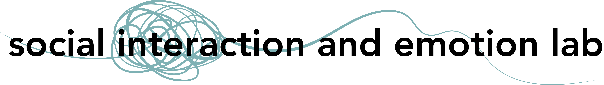

My research uses a combination of behavioral experiments, naturalistic data, and multi-modal methods to study how people regulate each others’ emotions across contexts (e.g., close relationships, peers, psychotherapy). This work operates at the intersection of social cognition and affective science to illustrate how we navigate emotions together. I currently have three big lines of research.
Changing how we think about emotional experiences can change how we feel about those experiences – a paradigmatic emotion regulation strategy called cognitive reappraisal. But it can be difficult to understand our own emotions, let alone change how we think about them. How do our interactions with others help change our perspectives of emotional experiences?
Offering someone new perspectives of negative events can be an effective way to regulate emotions, but challenging someone’s understanding of their personal experiences can also lead to feelings of invalidation and create resistance to support. What role does comfort from others – in the form of both verbal and nonverbal support – play in emotional processing?
There are lots of different things we can say to help regulate others’ emotions. But it’s not always just what we say. Sometimes, it’s how we say it that makes a difference. How do subtle interactive cues (e.g., linguistic, acoustic) facilitate emotion regulation in conversations?
If you’re excited about these research directions and would like to join my lab, please Apply Here!